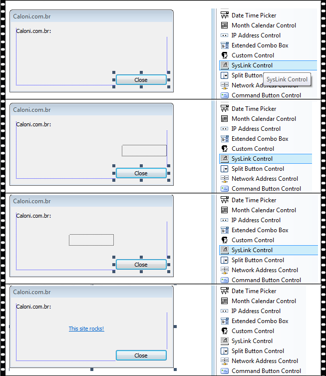
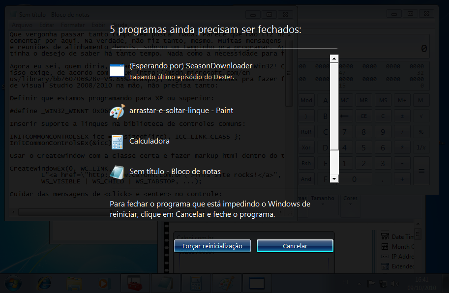
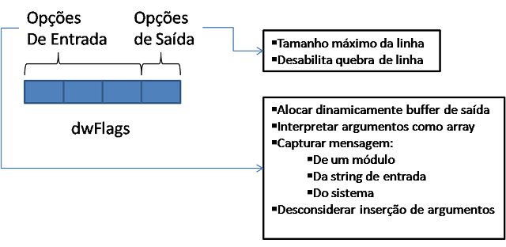
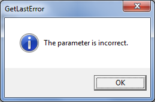

# Três em um
Caloni, 2010-10-09 <computer> [up] [copy]Que vergonha passar tanto tempo sem postar nada. Parece que não fiz nada que valesse a pena comentar por aqui.
Na verdade, não fiz tanto, mesmo. Muitas mensagens do Outlook, gráficos UML e reuniões de alinhamento depois, sobrou um tempinho pra programar. Aprendi algumas coisas que tinha o desejo de saber há tanto tempo... Agora eu sei, quem diria, criar linques suspensos nas janelas Win32! Que novidade, não? Pois é, isso exige, de acordo com o SDK, algumas artimanhas pra fazer funcionar. Para quem está de Visual Studio 2008/2010 na mão basta seguir os passos seguintes.
Definir que estamos programando para XP ou superior:
#define _WIN32_WINNT 0x0600
Inserir suporte a linques na biblioteca de controles comuns:
INITCOMMONCONTROLSEX icc = { sizeof(icc), ICC_LINK_CLASS };
InitCommonControlsEx(&icc);
Usar o CreateWindow com a classe certa, fazer markup html dentro do título e cuidar das mensagens de click e enter no controle:
CreateWindowEx(0, WC_LINK,
L"<a href=\"http://www.caloni.com.br\">This site rocks!</a>",
WS_VISIBLE | WS_CHILD | WS_TABSTOP, ...);
//...
case WM_NOTIFY:
switch( ((LPNMHDR)lParam)->code )
{
case NM_CLICK:
case NM_RETURN:
{
PNMLINK pNMLink = (PNMLINK)lParam;
LITEM item = pNMLink->item;
if( (((LPNMHDR)lParam)->hwndFrom == st_linkHwnd[hWndDlg]) )
{
// codigo util
}
Você que não está fazendo subclassing de janelas existe outra técnica que você pode utilizar: arrastar-e-soltar o controle do seu ToolBox. Qual é a graça?
Outra coisa que aprendi foi como enviar mensagens ao usuário para impedir que este reinicie a máquina em momentos importantes:
A partir do Vista temos uma nova API para fazer isso. E é muito simples:
BOOL WINAPI ShutdownBlockReasonCreate( __in HWND hWnd, __in LPCWSTR pwszReason ); BOOL WINAPI ShutdownBlockReasonDestroy( __in HWND hWnd );
Quando ao receber a famigerada WM_QUERYENDSESSION, basta retornar FALSE. O Windows faz o resto.
PS: E com uma ajudinha do Windows Internals ainda fiquei sabendo que dá pra se colocar na frente da fila para receber essa mensagem.
# Curva do Destino (Edgar G. Ulmer, 1945)
Caloni, 2010-10-13 <cinema> <movies> [up] [copy]A história de um homem que busca se encontrar com sua mulher que está do outro lado do país. Para isso ele vai de carona em carona, de NY para LA. No caminho, encontra um homem que morre no carro. Esconde o corpo e encontra uma mulher que se envolveu com ele no caminho, também pedindo carona. Chegando a Hollywood descobrem que o pai do sujeito, milionário, morreu, deixando toda sua fortuna para o filho. Enquanto ela tenta convencê-lo a fingir ser o herdeiro, ele acidentalmente a mata com o fio do telefone. Deixando esse passado para trás, o nosso protagonista vaga sem destino, apenas esperando o momento em que será preso, por nenhuma razão.
Como um dos primeiros filmes noir, a experiência de Detour é intensa dentro de uma história corriqueira. Dramática em seu âmago, sentimos pelo destino de seus personagens, pois sabemos que, de uma forma ou de outra, não haveria final feliz para eles. O tom "dark" do filme pode ser encontrado em todo lugar, desde as sombras que são formadas nos personagens quando estes estão dentro de algum hotel ou na imaginação do protagonista (quando este lembra da história apenas existe luz em sua testa).
Usando de alguns movimentos atípicos, como quando a câmera passeia pelo quarto da mulher após ser acidentalmente assassinada, o foco é usado para dar um efeito de perdido ao mesmo tempo em que observa as provas espalhadas pelo quarto. A situação vai se complicando aos poucos, até chegarmos no beco sem saída que a vida desse homem simples que não tinha nada de errado começar a desmoronar. Vemos isso com uma grande empatia pelo sujeito, que é um simples mortal sendo levado pela enxurrada de acontecimentos.
Poderia acontecer com qualquer um.
# As Crônicas de Nárnia: A Viagem do Peregrino da Alvorada
Caloni, 2010-10-21 <cinema> <movies> [up] [copy]Lembro de ter visto a primeira Crônica de Nárnia: O Leão, a Feiticeira e o Guarda-Roupa. Alguma coisa me dizia para não confiar muito em títulos muito longos, e... dito e feito. Não gostei da frágil história em uma narrativa que supõe-se introduzir personagens importante para as próximas tramas, mas que simplesmente joga seus elementos iniciais em um tabuleiro de xadrez e trata apenas de arrastar preguiçosamente essas peças nada originais, tiradas do fundo do baú da crença cristã com cobertura de mitologia grega.
Nessa nova aventura temos os mesmos artifícios, mas com um pouco mais de ação e uma direção de arte afiada, que consegue ser consistente do começo ao fim, não chama atenção para si com seus efeitos e ao mesmo tempo é criativa, apelando até mesmo para nossa curiosidade visual. Note, por exemplo, como a serpente marinha é feita. Ela é uma criação dos medos de Edmundo em uma ilha enfeitiçada. Quando cortam um pedaço dela, esse pedaço se desfaz como uma fumaça verde, a mesma usada em todas as cenas com influências malignas. Só que a forma usada para ela se desfazer é tão natural, que é quase como se a serpente fosse feita de algum outro material sólido que se transforma em gás e que se transforma em imaginação, paulatinamente, sem pressa e sem esfregar isso nos olhos do espectador.
A fotografia, ao mesmo tempo, nos remete a um filme que não é um épico tampouco é realista: fica no meio do caminho entre sonho e aventura fantasiosa, sendo que seu maior mérito é não deixar claro do que se trata. Diferente do que acontece em Os Piratas do Caribe, aqui boa parte da realidade montada pelos figurinos de pirata deve ser feito pela nossa própria imaginação, pois estamos em um cenário onde tudo é muito plástico, quase irreal, nos levando a um exercício de imaginação sempre ativa.
E se a história é facilmente esquecível ao sair da sala, pelo menos ela não é incoerente em seus pontos principais. A única ressalva, assim como no primeiro filme, é que os motivos da narrativa por si só não justificam todos os riscos e desventuras que aquelas crianças devem passar sempre que precisam ajudar Nárnia, dessa vez a resgatar as sete espadas (sagradas, claro) que servirão sei-lá-bem-pra-quê.
De qualquer forma, essa nova crônica se revela como um passatempo atraente do ponto de vista estético, podendo agradar uma criança paciente ou um adulto contemplativo. Na dúvida, leve pipoca.
# Atualizando HouaissParaBabylon no saite
Caloni, 2010-10-22 <projects> [up] [copy]O último comentário no meu último artigo sobre o conversor Houaiss para Babylon me fez lembrar de algo muito importante: eu não atualizei o branch do saite com a última versão. Deve ser por isso que as pessoas estão tendo problemas com o uso do código. Resolvo isso já:
Essa é a versão 1.2 descrita no meu último artigo sobre o projeto.
De qualquer forma, qual não foi minha surpresa quando tentei recompilar o projeto e ocorreram erros no atlcom. Depois de uma breve pesquisa descobri que precisava rodar alguns "patches" para o include funcionar direito. Então, provavelmente, Willians, era esse o problema. Tente de novo.
# FormatMessage para... dumies?
Caloni, 2010-10-26 <computer> [up] [copy]Já foi comentado em alguns círculos de ótimos programadores que a função da Win32 API FormatMessage é uma das criaturas mais bizarras já criadas.
O objetivo da FormatMessage é formatar uma string, assim como sprintf, mas voltado mais a escrever uma descrição de um código de erro. Sendo assim ela é essencial para que o usuário não receba um número no lugar de uma explicação de por que a operação falhou.
Os códigos de erro que ela se propõe a formatar podem ser os erros padrões descritos em winerror.h ou qualquer outro código cuja explicação esteja em algum módulo carregado pelo processo (DLL ou o próprio executável). Isso nos dá a liberdade de, por exemplo, criar uma DLL apenas com códigos e descrições dos erros dos nossos produtos.
Para que seja criada a mensagem final, uma definição de mensagem é requirida como entrada, que pode vir do próprio chamador ou da já mencionada tabela de erros de algum módulo qualquer. No caso de querermos a descrição de um erro de sistema (em winerror.h, retornado por GetLastError ou similares) a definição da mensagem já está embutida no sistema, bastando para nós passarmos o código.
É importante lembrar que, como estamos falando de uma descrição de erro, ou seja, de um texto, este pode vir em diversos idiomas, sendo que é nossa obrigação também definir para qual idioma desejamos traduzir nosso código de erro, sendo também nossa obrigação, no caso de mensagens específicas do nosso programa, fornecer o modelo da mensagem nos idiomas que formos suportar.
O resto da função funciona mais ou menos como o sprintf, cuspindo a mensagem-modelo em uma saída formatada de acordo com os parâmetros de entrada.
DWORD WINAPI FormatMessage( __in DWORD dwFlags, __in_opt LPCVOID lpSource, __in DWORD dwMessageId, __in DWORD dwLanguageId, __out LPTSTR lpBuffer, __in DWORD nSize, __in_opt va_list *Arguments );
As flags do parâmetro dwFlags mudam radicalmente o funcionamento da rotina, o que me lembra de outra figura bizarra: o realloc da biblioteca padrão.
No caso do FormatMessage, a variável dwFlags se divide em dois para especificar dois grupos de opções distintos. A parte maior contém as opções armazenadas tradicionalmente como um mapa de bits, enquanto o byte menos significativo define como será tratada a saída final, com respeito às novas linhas e qual será a largura máxima de uma linha na saída.
O parâmetro mais polêmico é o que possui vários significados. No caso de lpSource, existem dois significados possíveis:
1. **FORMAT_MESSAGE_FROM_HMODULE**. Ele é um HANDLE para um módulo.
2. **FORMAT_MESSAGE_FROM_STRING**. Ele é um ponteiro para string.
Isso explica por que essas duas flags são exclusivas: ou uma ou outra. Mesmo que a flag FORMAT_MESSAGE_FROM_SYSTEM seja usada, a função tentará achar a definição da mensagem no módulo especificado por lpSource primeiro, antes de ir buscar nas tabelas do sistema.
Chamado de dwMessageId, esse é o argumento onde podemos passar um código de GetLastError ou nossos próprios códigos de erro. Se já tivermos uma string em lpSource, no entanto, não faz sentido existir um código de erro.
Para definir o idioma é usado o mesmo sistema de resources: monta-se uma DWORD com MAKELANGID que contém informações do idioma primário e secundário. Se quisermos usar o idioma padrão do sistema (99% dos casos) basta passarmos o retorno de MAKELANGID(LANG_NEUTRAL, SUBLANG_NEUTRAL).
Mais um argumento polêmico. Se a flag FORMAT_MESSAGE_ALLOCATE_BUFFER, lpBuffer não é um buffer, mas um ponteiro que será preechido com um endereço de memória alocada usando a função API LocalAlloc. Isso quer dizer que, após usar a mensagem formatada, devemos desalocar essa memória com LocalFree.
Por outro lado, se o buffer for nosso, então seu tamanho deve ser especificado no próximo argumento, nSize.
Só que nem o parâmetro que especifica o tamanho do buffer é simples, assim. Se for especificado a flag FORMAT_MESSAGE_ALLOCATE_BUFFER, em vez de não fazer sentido esse argumento, ele significa o número MÍNIMO de caracteres que devem ser alocados, independente do tamanho da mensagem.
_Obs.: Lembre-se que são caracteres, e não bytes. Se estivermos programando em UNICODE o número de bytes dobra._
Essa seria uma lista simples de argumentos va_list que, para quem já fez funções ao estilo printf sabe muito bem usar. A lógica da função determina que os valores "%1", "%2" e assim por diante dentro da definição de mensagem sejam trocados por estes argumentos.
Se eles são strings terminadas em nulo (interpretação padrão), inteiros ou estruturas específicas, isso vai depender da mensagem que está sendo formatada, o que é outro if a ser lembrado na hora de formatar mensagens do sistema.
Também é importante lembrar que, uma vez chamada a função, o conteúdo de va_list não pode ser usado novamente se não for reinicializado com va_end seguido de va_start.
Agora, se todo esse negócio de va_sbrubles é muito complicado pra você, é possível passar um array de DWORD_PTRs com o uso da flag FORMAT_MESSAGE_ARGUMENT_ARRAY.
Se tudo der certo e você passar todos os argumentos certinhos, o retorno é o número de caracteres armazenados no buffer de saída, independente dele ter sido alocado dinamicamente ou não. Ah, sim, excluindo o nulo terminador.
Se der errado a função retorna zero. É possível obter o erro através de GetLastError, o que muito provavelmente será 87 nas primeiras vezes que você usar essa função.
Pensou que acabaria por aqui? E qual o significado das sequências de escape dentro da mensagem-modelo? O formato básico para inserção de um argumento segue o seguinte padrão:
%n!<format-string>!
Onde n é o número que identifica o argumento, como já vimos, e `format-string` é um espaço reservado para identificarmos o tipo do argumento e como ele aparecerá na mensagem de saída.
Existe uma longa explicação sobre o uso de controladores de largura e precisão da saída formatada e sua localização na lista de argumentos, cujo número irá depender se estamos usando va_list ou array de DWORD_PTRs, sendo que alguns problemas podem surgir se repetirmos esses números de inserção. Em dois momentos da explicação o artigo seja a sugerir que seja usada a função StringCchPrintf, primeiro por que FormatMessage não suporta formatação de ponto flutuantes, e segundo, porque, mesmo que seja possível formatar valores de 64 bits, seria mais fácil se você usasse outra função.
Ainda existe um uso específico para "%0", que é evitar quebra de linha durante a formatação da mensagem, inclusive no final. Esse uso entra em conflito com o nosso flag quando este determina um número máximo de caracteres por linha.
Ainda existe "de bônus" outras strings para preencher limitações que o próprio printf possui, como %%, %t, etc.
Como os programadores habituados com ataques de stack overrun devem deduzir, uma mensagem-modelo mal intencionada pode conter sequências de inserção que não existem na formatação habitual, forçando o vazamento de bytes na string final, o que pode forçar ataques planejados. Como o próprio artigo diz, usar um código de erro arbitrário retornado por uma API qualquer e usar FormatMessage sem a flag FORMAT_MESSAGE_IGNORE_INSERTS pode levar a resultados desastrosos.
Esse também é um bônus da MSDN, que te presenteia com exemplos de código tão fantasiosos quanto a própria função, veja o primeiro exemplo, por exemplo:
#include windows.h
#include stdio.h
void main(void)
{
LPWSTR pMessage = L%1!.s! %4 %5!s!;
DWORD_PTR pArgs[] = { (DWORD_PTR)4, (DWORD_PTR)2, (DWORD_PTR)LBill, %1!.s! refers back to the first insertion string in pMessage
(DWORD_PTR)LBob, %4 refers back to the second insertion string in pMessage
(DWORD_PTR)6, (DWORD_PTR)LBill }; %5!s! refers back to the third insertion string in pMessage
const DWORD size = 100+1;
WCHAR buffer[size];
if (!FormatMessage(FORMAT_MESSAGE_FROM_STRING FORMAT_MESSAGE_ARGUMENT_ARRAY,
pMessage,
0,
buffer,
size,
(va_list)pArgs))
{
wprintf(LFormat message failed with 0x%xn, GetLastError());
return;
}
Buffer contains Bi Bob Bill.
wprintf(LFormatted message %sn, buffer);
}
Depois ele chega a reimplementar o exemplo usando va_list, o que é muito interessante, mas... bom, deixa pra lá. Vamos fazer nosso próprio teste.
Esse é o uso clássico: precisamos de uma descrição de um código de erro para o usuário; um código Win32. A chamada para esse tipo de uso pode ser encapsulada em uma função mais simples:
#define _CRT_SECURE_NO_WARNINGS // quanta frescura...
#include <tchar.h>
#include <windows.h>
#include <string>
using namespace std;
wstring GetErrorDescription(DWORD errNumber)
{
wstring ret;
bool msgOk = false;
LPVOID lpMsgBuf = NULL;
if( FormatMessage(FORMAT_MESSAGE_ALLOCATE_BUFFER // aloque pra mim (não sei o tamanho)
| FORMAT_MESSAGE_FROM_SYSTEM // descrição do erro está no sistema
| FORMAT_MESSAGE_IGNORE_INSERTS, // ignora os inserts pra não sofrer com hackerzinhos
NULL, // sem fonte:
errNumber, // a fonte é o código de erro
MAKELANGID(LANG_NEUTRAL, SUBLANG_DEFAULT), // idioma padrão
(LPTSTR)&lpMsgBuf,// isso é um ponteiro para um ponteiro para um buffer que será alocado
0, // nada disso
NULL // e nem disso
) > 0 ) // maior que zero quer dizer "beleza!"
{
if( lpMsgBuf ) // só pra...
{
ret = (PCWSTR) lpMsgBuf; // ok, vamos usar essa string
msgOk = true;
LocalFree(lpMsgBuf); // não precisamos mais da memória alocada
}
}
if( ! msgOk ) // alguma coisa não deu certo
{
wchar_t msgBuf[100]; // o suficiente
_snwprintf(msgBuf, 100, L"Unknown error (code %d)", errNumber);
ret = msgBuf;
}
return ret;
}
int CALLBACK wWinMain(HINSTANCE, HINSTANCE, PWSTR errNumberStr, int)
{
int errNumber = _wtoi(errNumberStr);
wstring errDesc = GetErrorDescription(errNumber);
MessageBox(NULL, errDesc.c_str(), L"GetLastError", MB_OK | MB_ICONINFORMATION);
return errNumber;
}

Existem milhares de forma de usar essa função, como você deve ter percebido pelos parâmetros. Não seja tímido: se você conhece algum truquezinho esperto e quer compartilhar com os usuários da FormatMessage, essa é a hora!
# O Mágico (Sylvain Chomet, 2010)
Caloni, 2010-10-27 mostrasp> <cinema> <movies> [up] [copy]Esse é o novo longa de Sylvain Chomet, o mesmo diretor de As Bicicletas de Belleville. Foi baseado em um roteiro de Jacques Tati (do filme Meu Tio). Ou seja, temos aqui um roteiro de algo belo em sua pureza sendo dirigido por alguém com o controle nato do surreal. Não bom.
A primeira metade é deslumbrante. A direção de arte compõe os quadros mais inspirados de belas cidades, ou teatros em que o velho mágico se apresenta; ou até pela fotografia, que ilumina com cores quentes e gela com cores frias. Adotando uma comédia baseada em coincidências ingênuas (ex: ensopado de coelho, neve de penas), a trilha sonora acompanha cada passo dos personagens e define o sentimento do momento, contando a história muito melhor do que os diálogos, que inexistem. No entanto, em alguns momentos ela chega a se tornar repetitiva, mas sem nunca perder sua função e sem nunca se tornar artificial.
E se nos encantamos com os pequenos e precisos movimentos dos personagens (como o da senhora que observa o casal no trem, enquanto a pequena Alice encosta sua cabeça no ombro de Jean-Claude Donda (o mágico do título), ou quando a velha escocesa se empolga com as palmas quando ela acende uma lâmpada que improvisa o número do mágico no pequeno bar do vilarejo), é porque estamos descobrindo aos poucos a magia daquele pequeno universo criado para contar a história desse mágico decadente e sua fuga da triste realidade que as pessoas não gostam mais de mágicos.
Ultrapassados por bandinhas de rock recém-chegadas (como demonstrado de forma hilária no número dos "pseudo-Beatles"), os artistas das antigas se vêm enclausurados em palcos obscuros ou até mesmo vitrines de lojas anunciando produtos. É o mundo moderno que dá as costas aos expatriados que antes eram gloriosos e aplaudidos, algo muito parecido com a visão das trigêmeas de Bicicletas.
Mas é injusto comparar a complexidade dos estereótipos criados em Bicicletas com madame Souza, as trigêmeas, o próprio Champion e até o cachorro! Porém, mesmo nos mantendo no universo de O Mágico, do segundo para o terceiro ato vamos perdendo esse deslumbramento e aos poucos perdemos o sentido de estarmos ali assistindo à vida desses personagens, pois já não importa mais. Tudo começa a ficar confuso, pois já não nos interessamos mais pelos personagens que no início nos encantamos. E isso talvez seja, ou não, o reflexo do próprio mágico que as pessoas já não querem mais.
# A Suprema Felicidade (Arnaldo Jabor, 2010)
Caloni, 2010-10-29 <mostrasp> <cinema> <movies> [up] [copy][Baarìa - A Porta do Vento], trabalho mais pessoal de Giuseppe Tornatore (Cinema Paradiso), é uma superprodução que tem como característica marcante não definir um foco específico ao contar sua história. Disposto a tornar a Baarìa do título, um vilarejo no interior da Itália, protagonista de tudo que aconteceu no país ao longo de décadas de história, Tornatore sacrifica a clareza narrativa em prol de um bem maior: a absurdamente estonteante rima final, que torna o seu filme, como um todo, uma experiência única e inesperada.
Mesmo sem essa clareza narrativa, no entanto, Baarìa une as pontas usando o elemento mais aprimorado da obra: a própria cidade-título. Dessa forma, a rua principal e seus frequentadores de sempre são ferramentas úteis nas mãos do diretor para criar a passagem do tempo.
Aparentemente traçando um objetivo similar, pelo menos na intenção, o trabalho de Arnaldo Jabor, depois de mais de vinte anos sem dirigir um filme, emociona mais do que o exemplo italiano. Traz em sua frágil estrutura elementos de filmagem que poderiam enriquecer qualquer outra experiência cinematográfica. Porém, aqui, em específico, por mais que tenhamos a emoção presente na maioria das cenas e a beleza estética do seu figurino e trabalho de arte, falta o grude que junta toda a história, e que permitiria que o espectador não apenas se emocionasse, mas que conseguisse concluir as aberturas narrativas tão bem introduzidas em seu início.
E se faço uma relação entre Jabor e Tornatore, não é por acaso. Nascido em 1940 no Rio de Janeiro (cenário do filme), ouso estabelecer que aí, assim como foi com o diretor italiano, temos o filme mais autobiográfico de sua carreira. Com uma história salpicada de conflitos familiares, a vida sob o olhar de uma criança e do seu avô realizam uma dança no melhor estilo da reflexão que fazemos quando estamos mais velhos e lembramos das besteiras que pensávamos antigamente; tudo regado com cenas nostálgicas de um Rio de Janeiro ainda muito jovem, mas carregado de vida.
Porém, mesmo que a direção de arte e o figurino sirvam para aguçar esse tom nostálgico, é inevitável perceber que figuras como o comprador de jornais e o pipoqueiro ajudam a ilustrar parte da sociedade da época, mas nunca a defini-la. O que vemos, no fundo, são os mesmos tipos da nossa sociedade atual travestidos de pessoas da época com o uso de palavras e referências datadas. Apesar de soar autêntico o resultado sai falso, como nas conversas sobre futebol ou o uso de gírias contemporâneas obviamente teatrais; tudo isso serve unicamente como curiosidade histórica.
Aliás, no filme temos diversas curiosidades que possuem apenas este único fim. Um flashback dos mais empolgantes ocorre logo no início, em um salto para 39, quando o casal principal se conhece em um baile e, no meio da dança, se envolve em uma conversa acalorada sobre uma cena de um filme da época, hoje um clássico, sendo a animação dos personagens extremamente contagiante (ainda mais para os cinéfilos).
Igualmente interessante é perceber como na época pouco existia a noção do politicamente correto ou da censura para as crianças, tão divertidamente demonstrado na cena do teatro de anões, quando um dos atores apunhala a mocinha, retirando seu coração. Adotando a mesma postura para abordar o tema da prostituição e do homossexualismo (ainda que de uma forma velada), as incursões nunca se aprofundam o suficiente, servindo apenas de mera distração do núcleo da história.
Porém, mesmo a história principal, do casal apaixonado que forma uma família e se deixa aprisionar com o passar dos anos na armadilha da rotina, não vendo nunca seus sonhos serem realizados, é charmosa até um certo ponto, mas logo decai para a repetição e o clichê, sem nunca vermos uma conclusão do pensamento, apenas pretensiosamente sendo transferida essa responsabilidade para o filho do casal.
Mesmo com todos seus defeitos narrativos, A Suprema Felicidade poderia muito bem ter sido uma Baarìa nacional, representando no Rio de Janeiro o coração de todos os habitantes do Brasil. Infelizmente, para Jabor, nada restou para unir suas pontas, e a rima final de Tornatore faz a falta merecida em uma conclusão que desmerece em muito todas as belíssimas construções artísticas que vimos durante a projeção.